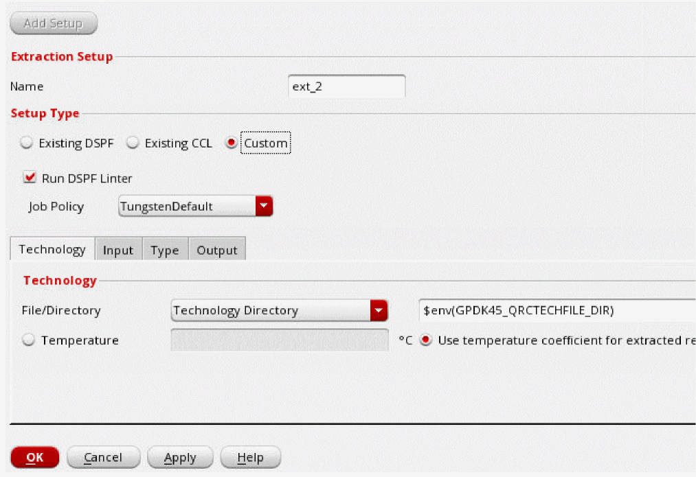
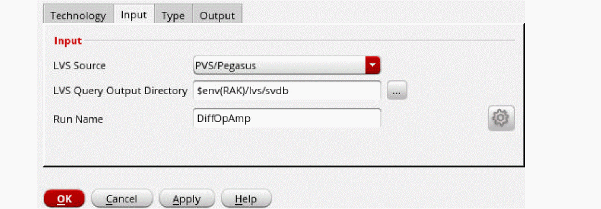
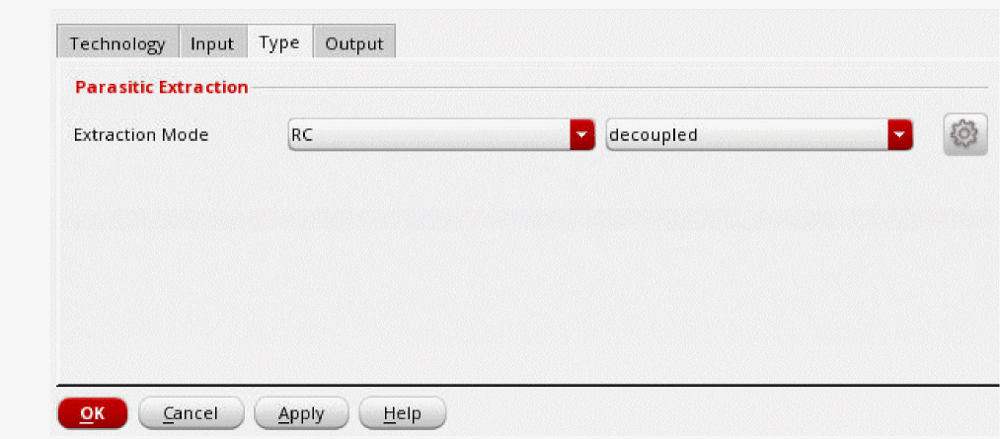
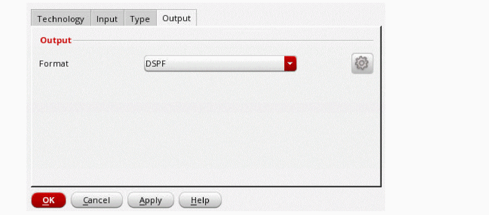
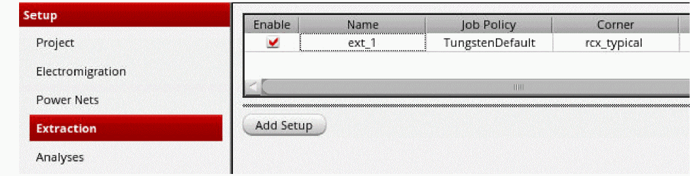

Specifying New Extraction Settings
- Choose Setup – Extraction from the task pane.
- Click Add Setup.
- In the Name field, specify the name of the extraction run.
- In the Setup Type section, select Custom.
- Select Run DSPF Linter if you want to run the spfchecker utility on DSPF.
- Select a job policy from the Job Policy Name drop-down list.
-
On the Technology tab, select either a technology library file or a technology directory from the File/Directory drop-down list.

-
If you select Technology Library File:
-
Browse to and select the technology library file (pvtech.lib).
The Technology Name field and Corners table will be automatically displayed. -
To add the technology name and corners manually, you can type in the Technology Name field, and add the list of corners in the Corners table. Press the
Tabkey to add multiple corners and the temperature of the corners at which the extraction will be performed. -
Select the Use temperature coefficient for extracted resistors check box if you want to use the simulation temperature to compute parasitic resistance.
If you select this check box, you cannot specify the temperature for the individual corners.
-
Browse to and select the technology library file (pvtech.lib).
-
If you select Technology Directory:
- Browse to and select the directory where Quantus technology file (qrcTechFile) resides.
- Specify the temperature at which the extraction will be performed, or select the Use temperature coefficient for extracted resistors check box if you want to use the simulation temperature to compute parasitic resistance.
-
On the Input tab, select an input data source from the LVS Source drop-down list.
 - In the LVS Query Output Directory field, specify the path to the directory in which the input data is stored.
- In the Run Name field, specify the name of the LVS run.
-
On the Type tab, specify the extraction type (what to extract) and the coupling mode.
 -
On the Output tab, specify the format of the extraction output file.
 -
Click OK.
The extraction details will be displayed in the Extraction tab. You can click Add Setup again to add additional extraction setups.

In addition to the above basic settings, you can also specify some advanced settings for extracting a netlist file.
Related Topics
- Environment Variables
- Using an Existing DSPF File
- Using an Existing CCL File
- Specifying Advanced Extraction Settings
Return to top